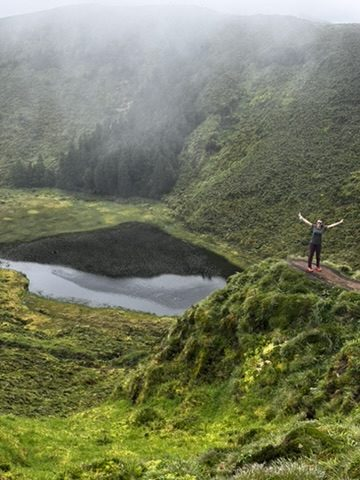
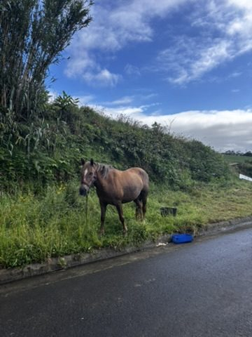
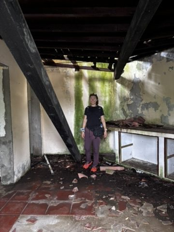
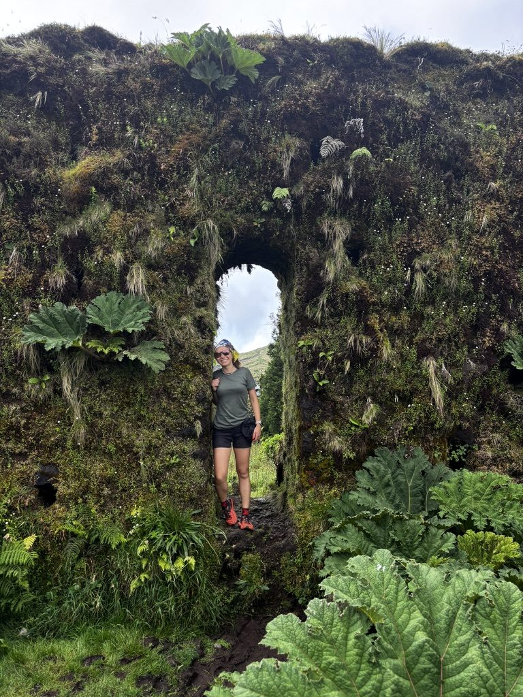
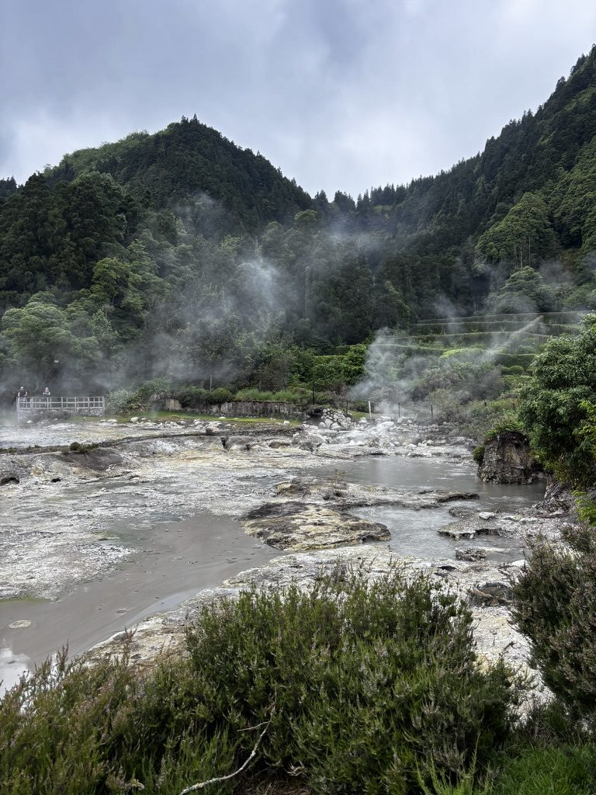
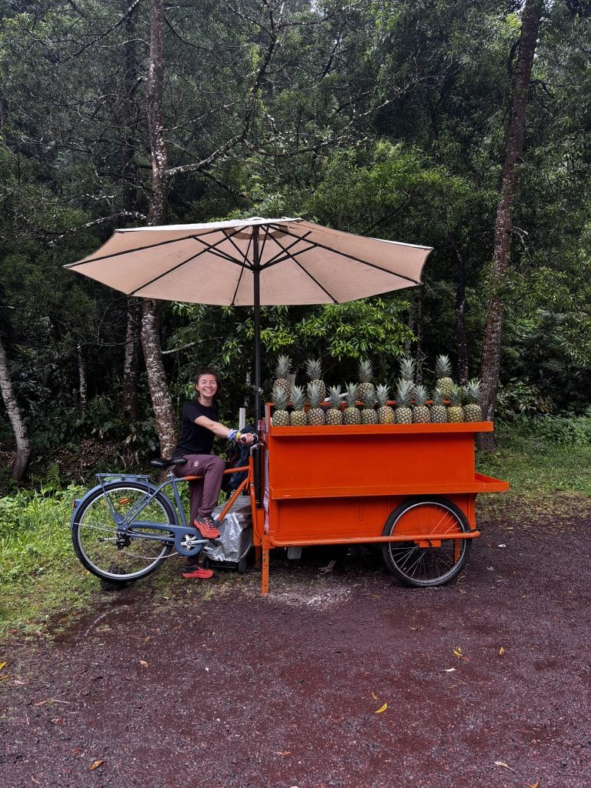

The weather in the Azores changes fast. Everyone tells you this and you nod and think: yes, island weather, understood. And then you are on a mountain and the clouds move in from the Atlantic in about four minutes and you are soaked through and the flowers around you don't seem to care at all.

Blending in with the flowers. The rain was heavy. The flowers were unbothered. I tried to match their energy.
I had started the hike in sunshine. By the time I reached the ridge, I couldn't see more than twenty metres ahead. The path was still there. The views had been replaced by cloud. I kept going, because that is what you do, and also because there was no particular reason to turn back.
Living best life in the mountains
Here is the thing about hiking in bad weather: once you accept that you are wet and cold and that this is simply the state you are in now, something shifts. The discomfort stops being a problem and starts being the experience. You stop wanting the weather to be different. You're in it. You're moving. That counts.

Best life. Mountains. Rain. No regrets.
I have done enough hiking now to know that the days that start difficult and end in something unexpected are often the ones you remember most. This was going to be one of those days.
The horse on the road
On the way down, on a road that wound between farms and hills, there was a horse. Just standing there at the edge of the road. Not tied to anything, not part of any obvious setup. Just a horse, being a horse, watching me walk past.

Random beautiful horse on the road. We had a moment. He was not impressed by me. I was very impressed by him.
We looked at each other for a while. Then he looked away, which felt like a verdict, and I continued down the hill.
Finding shelter
The storm came in properly in the afternoon. Not a drizzle — actual sideways rain, the kind that means business. I found shelter in a small café that seemed to exist specifically for situations like this. I sat with a coffee and watched the rain and felt, despite everything, completely fine.

Found shelter. Waited. The storm passed. As storms do.
There is a particular peace in being stuck somewhere by weather. You have no decision to make. You just sit and wait and watch the rain on the glass. I had nowhere to be. The storm had made that choice for me, which meant I could stop making choices for a while. That felt like a gift.

The island after the rain. Green paradise. Everything washed clean. Worth waiting for.
Food cooked by the earth
In Furnas, there is a restaurant that serves cozido das furnas. It is a traditional stew — meat, vegetables, sausages — and it is cooked underground using geothermal heat. The pots go into the ground in the morning. The volcano does the rest. By lunchtime, the stew is ready.

Food cooked by the earth. Geothermal heat, traditional stew, several hundred years of knowing what you're doing.
I ate it slowly because it deserved that. The meat was soft in the way that only very long, very slow cooking produces. The vegetables had absorbed everything. There was bread. There was wine. Outside, steam rose from the ground in the thermal area. Everything about it was right.
It is one of those meals you think about later. Not because it was fancy — it wasn't. Because it was exactly what it was supposed to be, in exactly the right place.
The pineapple business
I should mention the pineapple. The Azores grows pineapples in greenhouses — the only place in Europe where this happens, apparently — and they take two years to mature. Two years per pineapple, in a heated greenhouse, on a volcanic island in the middle of the Atlantic. This struck me as such a committed enterprise that I had to buy one.

Started a business. It's a pineapple business. Two-year growth cycle. Very exclusive.
The pineapple was very good. Much smaller and sweeter than what you get elsewhere. Whether this was worth two years of greenhouse cultivation is a philosophical question I leave open. I think yes.
Poca Dona Beija
The day ended at Poca Dona Beija. It is a thermal pool — naturally heated, outdoors, with the forest around it and steam rising from the water. People call it a piece of heaven. I understand why.

Poca Dona Beija. A piece of heaven. The name is accurate.
I had hiked in rain, found a horse, eaten geothermal stew, bought a pineapple, and ended up in a thermal pool in a forest. I had not planned any of it in any order. It had simply happened, one thing leading to the next, because that is what days do when you let them.
I stayed in the water until my fingers went soft. Then I stayed a bit longer.